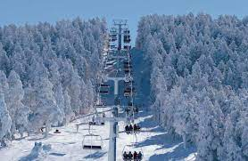
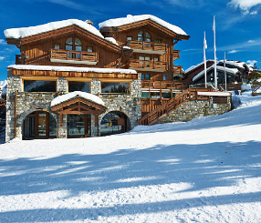
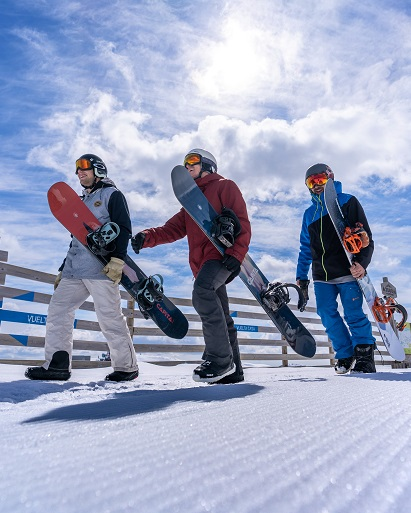

Valdelinares
-  Informacion
-  Alojaiento
-  Actividades
Informacion
Al sur de Teruel, en plena sierra de Gúdar, también podrás disfrutar de la nieve. Junto a su vecina Javalambre, es la estación preferida por los esquiadores valencianos
Sector Valdelinares
En pareja, con amigos, en familia… Da igual con quién vengas. La estación de Valdelinares te conquistará por su comodidad, sus modernas instalaciones y sus hermosos bosques de pino negro.
Si eres novato en esto del esquí, dispones de una estupenda zona para debutantes en la parte alta de la estación. Si, por el contrario, eres un esquiador experimentado, encontrarás pistas de mayor dificultad
Alojaiento
-
Hotel Palacio la Marquesa
- SPA
- Piscina exterior
- Wifi gratuita
- Parking
-
El hogar de las mariposas
- Parking
- Guardaesquís
- SPA
- Wifi gratuita
-
Hostal Venta Laira
- Acepta Mascotas
- Parking
- Televisor
- Guardaesquís
-
Hotel Mora
- Parking
- Guardaesquís
- Admite Mascotas
- Ascensor
-
Hostal de la Trucha
- Guardaesquís
- Televisor
- Acepta Mascotas
- Parking
Actividades
- Snowpark
-
Situado en la pista Villarejo, cuenta con remonte propio y está abierto desde que comienza la temporada. Está formado por más de 25 módulos de todos los niveles que permiten al deportista mejorar su técnica e ir evolucionando.
- Esquiar con un Ranger
-
La estación ha preparado esta actividad para los esquiadores adultos, una experiencia única que les permitirá conocer todos los rincones y secretos de la estación
- Snowspeed
-
En la pista «Ventisquero» hay una zona de Slalom y Snowpeed donde los esquiadores podrán medir su velocidad gracias a un cronómetro situado al final de la pista.
La zona está preparada con fotocélulas que registran la velocidad máxima que alcanzan los esquís.
- Pista de trineos
-
Zona acotada para el uso exclusivo de trineos y un área específica para construir muñecos de nieve, ¡porque no todo es esquiar en Javalambre! El horario de esta pista es de 11:00 a 17:00 h.